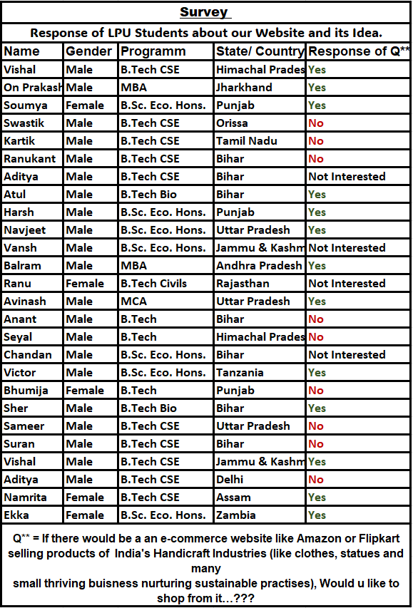

About us:-
The moto of our website is to uplift bottom people of society who have always help to sustaiin the product of our culture and the products which are on the edge of extint.
Initial Reason for this Idea: The 1997-98 Asian financial crisis that hit the four Asian Tiger nations (Hong Kong, Singapore, South Korea and Taiwan). After this when these nations started stabilizing themselves especially South Korea stated investing for national Cultural Revolution in the country for the long-term vision of “Economizing their Culture”. Under this the South Korea started investing especially in entertainment and music industry. Under this South Korea started investing. As the output for this we can see BTS the music band of 7 Korean boys having the world-wide fanbase and many such more bands like this in the entire K- Pop industry. It came along with many such associated flourishing industries like K-Dramas that created a complete entertainment fanbase for South Korea which further influenced their tourism sector along with setting Global Korean trends and brands like Korean Beauty. South Korea is a perfect market case study of economizing the Nation’s culture in many aspects like entertainment, Beauty brands, product market for local products of South Korea. World is now influenced by Korean styles from clothes to accessories to Korean fashion. On these terms nation like India accommodating such a large cultural diversity could economize its culture starting at least from nation level. Therefore, we are creating this platform to use digitalization as a tool to flourish the local ethnic cultural market of India.
Survey response of consumers about our website
